Relevo
No es un calendario. Es un sistema que hace visible el riesgo de descobertura antes de que se materialice.
Definición → Handoff
Lo que falla hoy
Punto de partidaLa organización coordina más de 300 voluntarios con hojas de cálculo y mensajería. El encargo enumera cuatro problemas. En vez de tratarlos por separado, busqué qué tienen en común.
Una hoja de cálculo no sabe qué es el tiempo ni qué es una persona. No puede detectar que alguien está en dos sitios a la vez.
El fallo de cobertura se descubre cuando ya ocurrió: con el puesto vacío y el festival abierto al público.
Por eso Relevo no es un calendario. Es un sistema que adelanta ese descubrimiento. Cada decisión posterior se juzgó contra esta frase.
Tres usuarios con trabajos divergentes
Proto-personasNo hubo acceso a usuarios reales, así que no simulé investigación: son proto-personas derivadas del encargo, declaradas como tales. Su divergencia es la que justifica después dos árboles de navegación distintos.
Marta
«Quiero ver de inmediato qué va a fallar, para actuar antes de que ocurra.»
Maneja 300 personas y decenas de actividades. No puede revisar turno por turno.
Diego
«Cuando alguien me falla, quiero un reemplazo que pueda de verdad, sin preguntar uno por uno.»
Necesita autonomía, pero sus decisiones afectan la cobertura global.
Sofía
«Quiero saber sin dudas dónde tengo que estar ahora.»
Dona su tiempo: su tolerancia a la fricción es baja.
Diez supuestos, tres críticos
Y un riesgo estructuralCada supuesto lleva escrito qué se rompe si resulta falso. Esa columna es la que permite priorizar cuál validar primero.
Doble canal
La herramienta se adopta, pero los cambios se siguen negociando por mensajería. Si la fuente de verdad no es única, vuelven los cuatro síntomas.
No se combate con funcionalidades sino con fricción: pedir un cambio dentro debe costar menos que escribir el mensaje. Seis decisiones del diseño salen de aquí.
Dos árboles, no uno con permisos
SitemapLa coordinación necesita agregar 300 personas en una vista. El voluntariado necesita una sola respuesta.
Un árbol compartido obliga a diseñar pantallas que sirven a ambos perfiles, y esas pantallas terminan sirviendo mal a los dos.
El inicio del voluntariado es «Mi próximo turno», no un calendario. Un calendario responde muy bien «cómo está el evento» y muy mal «dónde tengo que estar ahora».
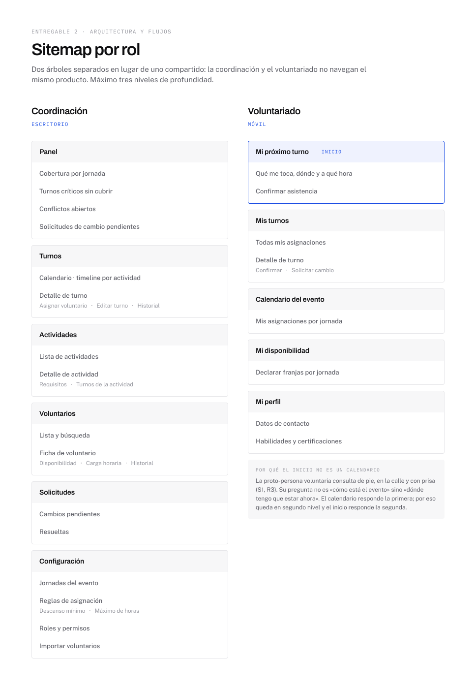
Evaluar antes de mostrar
Flujo principalEl primer planteamiento validaba los conflictos al confirmar la asignación. Lo cambié.
Validar al final permite que la coordinación pierda tiempo eligiendo a alguien que era imposible desde el principio — exactamente lo que hace hoy la hoja de cálculo.
Al evaluar antes, el conflicto deja de ser un error y pasa a ser información para decidir.
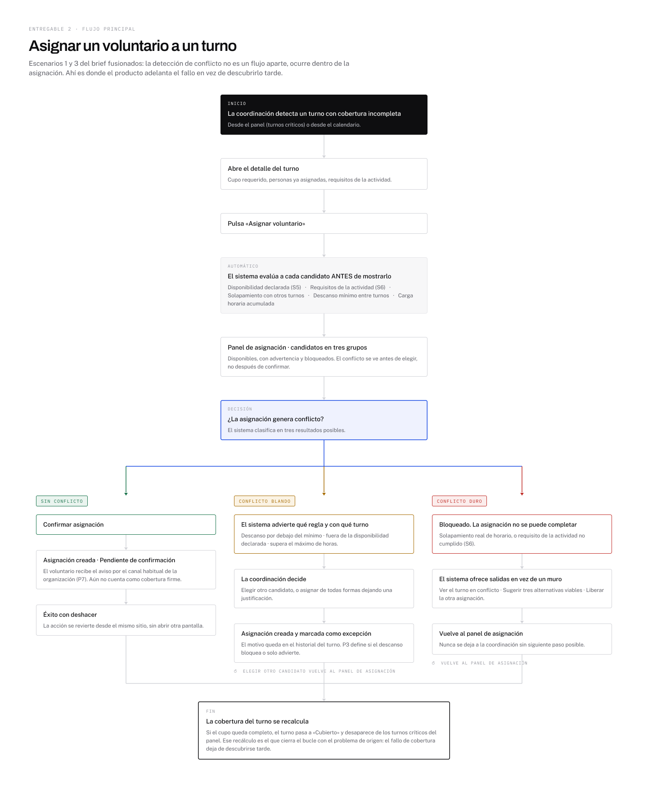
El gris es una prueba, no una convención
Cuatro vistas · 23 notasSi la jerarquía y los tres estados de cobertura se leen sin color, entonces en alta fidelidad el color queda libre para significar estado en vez de cargar también con la jerarquía. Superar esa prueba obligó a codificar la cobertura por forma.
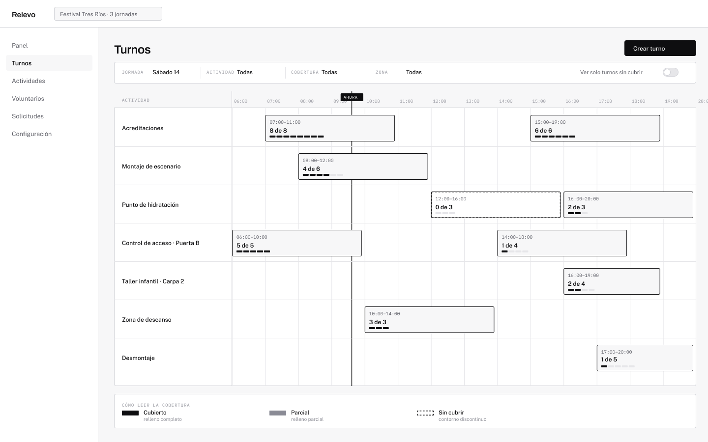
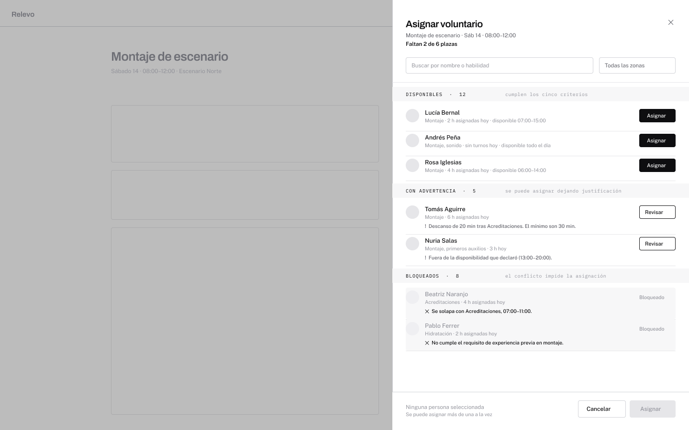
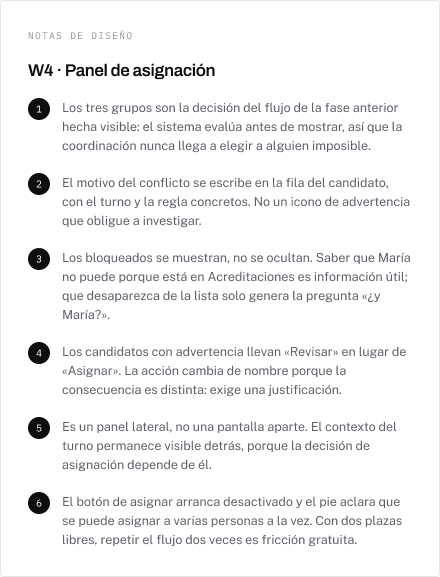
El calendario es un timeline por actividad, no una cuadrícula semanal. Filas = actividades, eje horizontal = horas. Así el hueco de cobertura aparece como un agujero literal en la fila: la forma del gráfico pasa a ser la forma del problema.
Un sistema, no una colección de pantallas
Librería RelevoLos colores crudos no aparecen en ningún selector de Figma. Solo la capa semántica es vinculable — es lo que impide que alguien enlace un botón a azul/500 en vez de al token de acción.
Dev Mode devuelve var(--color-cobertura-parcial), no un hexadecimal suelto.
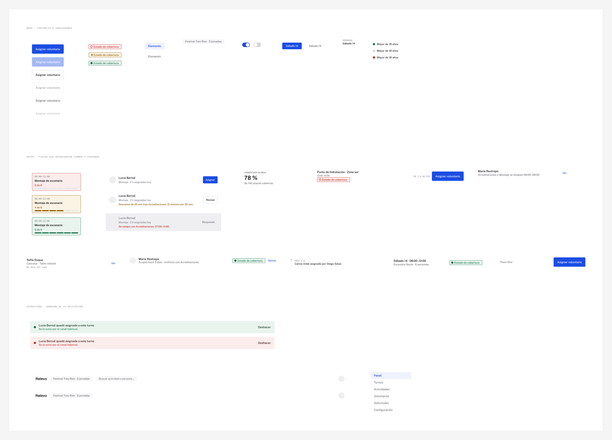
Dos fallos que no se ven mirando
Contraste WCAG AAEn lugar de afirmar que el sistema cumple AA, calculé el ratio real de cada par de colores en uso, en los dos modos. Dos fallaban.
Umbral AA para texto normal: 4.5:1. Todo el sistema pasa ahora en modo claro y oscuro.
Ninguno se ve mirando la pantalla. Aparecieron porque calculé los números.
El recorrido, en cinco pantallas
Prototipo de 23 conexiones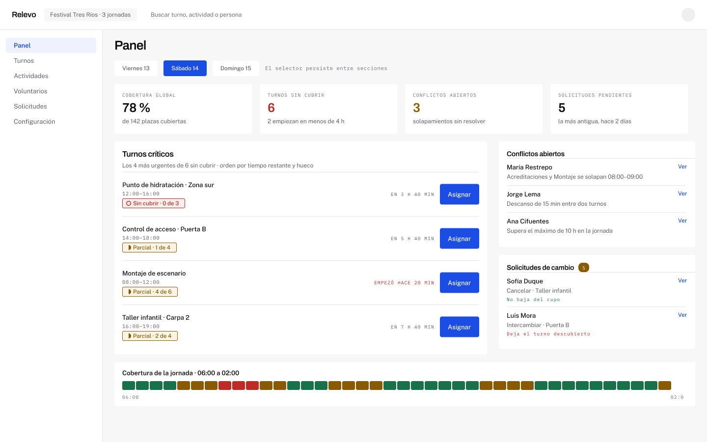
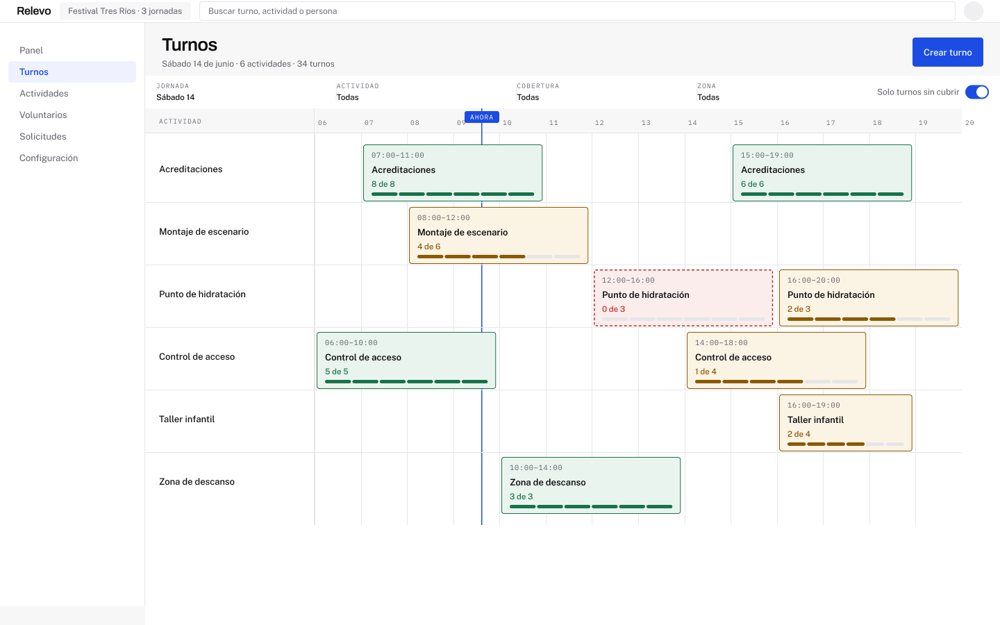
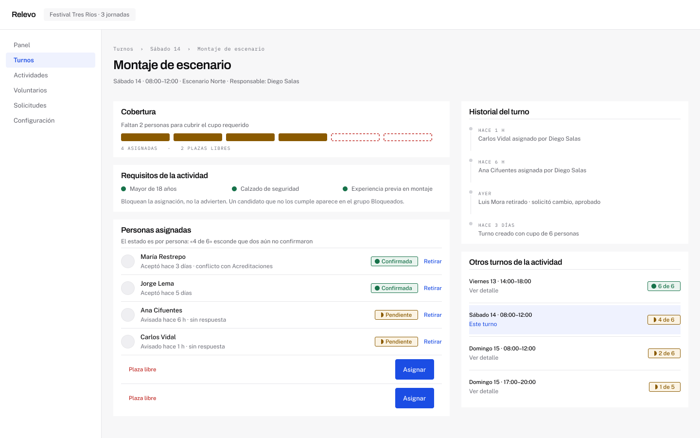
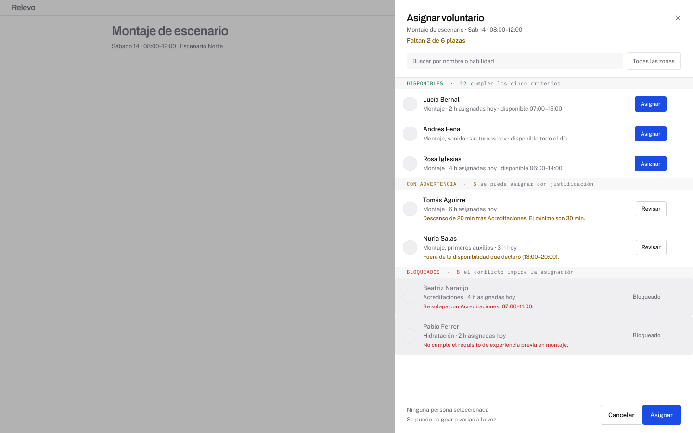
El panel se ordena por urgencia, no por cronología. Y la urgencia cruza el tamaño del hueco con el tiempo restante hasta el inicio.
Un turno al que le falta una persona y empieza en tres horas está por encima de uno al que le faltan tres y empieza mañana.
Treinta y cuatro turnos, y uno solo
El mismo sistema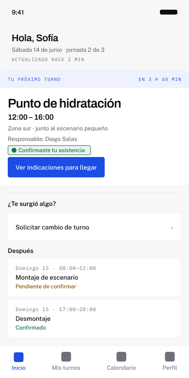
Las dos salen de los mismos 67 tokens y los mismos componentes. Eso demuestra la escalabilidad en lugar de afirmarla — y el contraste de densidad es el argumento, no un efecto lateral.
Cuatro estados sobre pantallas reales
No sobre plantillas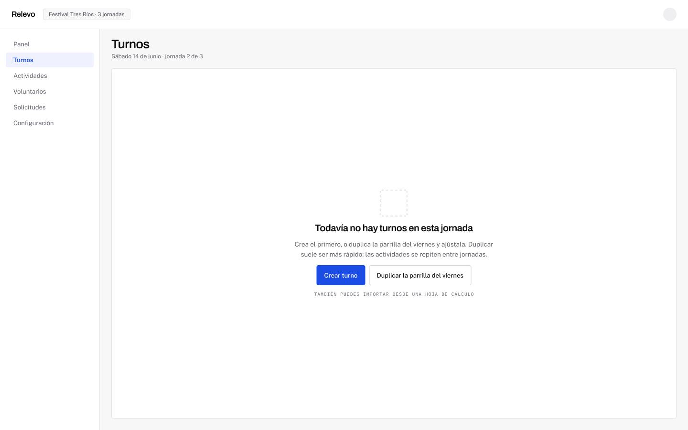
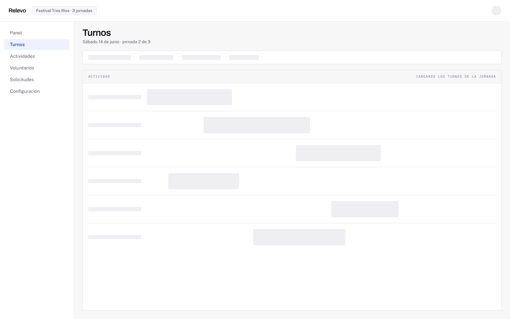
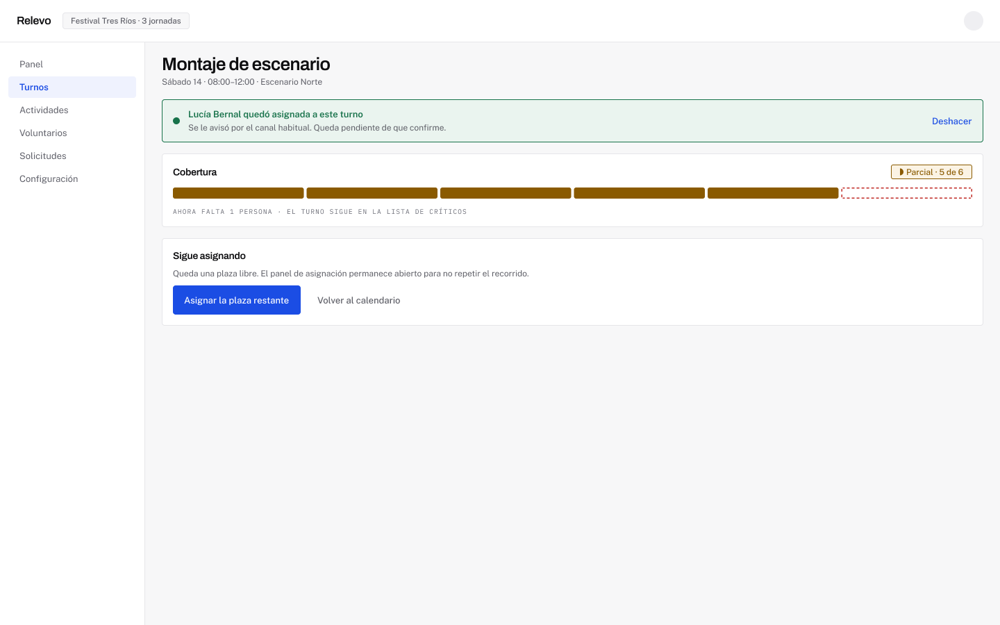
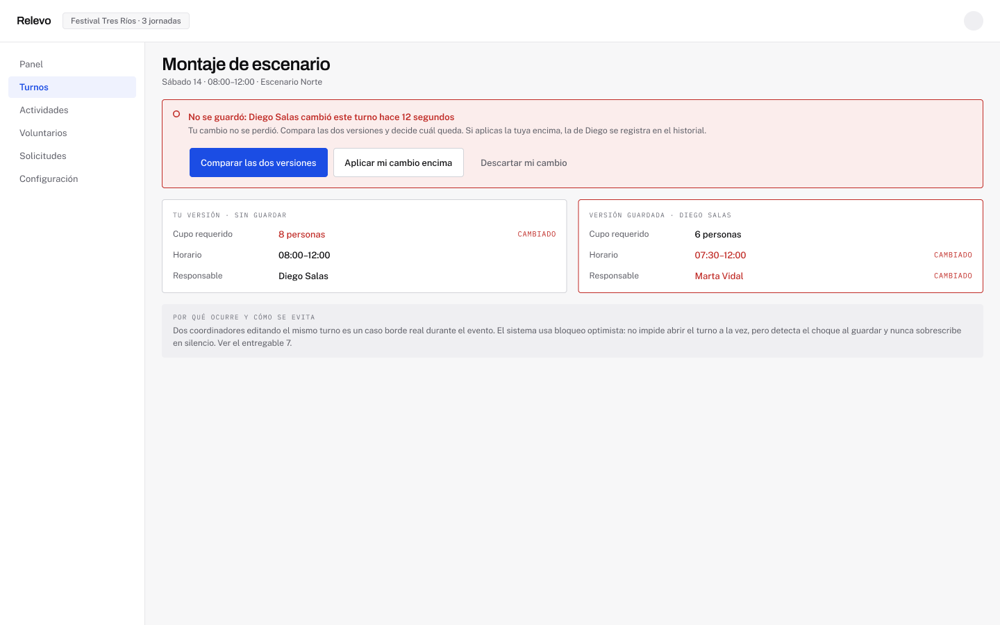
El estado vacío no dice «no hay nada aquí»: ofrece duplicar la parrilla de la jornada anterior, porque las actividades de un festival se repiten.
El estado de éxito dice que la persona quedó asignada y que aún no ha confirmado. Celebrar un éxito a medias construye la falsa sensación de cobertura que el producto existe para eliminar.
El caso que valida una decisión anterior
CB3Un turno puede tener el cupo completo y estar en riesgo real si nadie ha confirmado asistencia.
CB3 apareció auditando los casos borde, y valida a posteriori la decisión tomada en la fase 3 de mostrar el estado por persona y no solo por turno.
Duro y blando es una decisión de producto
13 reglas de negocioProduce un imposible físico o incumple una regla de la organización.
Solapamiento de horarios · requisito de actividad no cumplido
Es una decisión legítima que alguien debe poder tomar dejando justificación.
Descanso por debajo del mínimo · fuera de la disponibilidad declarada
Regla operativa: ante la duda, blando. Convertir un blando en duro parece más seguro y en realidad empuja a la coordinación fuera del sistema — que es R1 otra vez.
El prototipo respeta el comportamiento
23 conexiones · 0 rotasSolo los candidatos disponibles completan la asignación. Los que tienen advertencia y los bloqueados no llevan a ninguna parte.
En el producto real exigen justificación o directamente no pueden asignarse. Conectar los tres grupos por igual habría sido más rápido y habría anulado la propiedad que todo el diseño intenta demostrar.
Los prototipos de Figma no admiten enlaces entre páginas. La API devuelve el error literal. Por eso la pantalla de éxito existe duplicada dentro de la página del prototipo — declarado en la documentación, no escondido.
Las cinco decisiones que sostienen la propuesta
CierreEvaluar a los candidatos antes de mostrarlos
Validar al confirmar permite crear el problema. Evaluar antes convierte el conflicto en información de decisión.
Dos árboles de navegación, no uno con permisos
Agregación frente a respuesta única. Un árbol compartido sirve mal a los dos perfiles.
El estado nunca se comunica solo con color
Forma, color y texto a la vez. Se diseñó primero, y por eso los wireframes funcionan en gris.
El estado es por persona, no solo por turno
«4 de 6» esconde que dos aún no confirmaron. Un turno lleno puede estar en riesgo real.
Ninguna rama del flujo termina en un muro
Un bloqueo sin alternativa empuja a la persona fuera del sistema. Ahí vuelve el doble canal.
La planificación
y las decisiones
fueron humanas.
La IA intervino en tres frentes acotados: dar forma legible a un plan ya decidido, acelerar la creación de componentes en Figma, y redactar la documentación.
La generación automática optimiza por parecer completa: sus fallos no son errores obvios sino salidas plausibles. Por eso el trabajo de revisión consistió, casi siempre, en decidir qué era realmente cierto — y está registrado con sus hallazgos.
Validar S1, S5 y S10 con la organización: los tres pueden invalidar partes enteras del diseño.
Resolver P3 y P6, que deciden si dos reglas son duras o blandas y cambian el flujo principal.